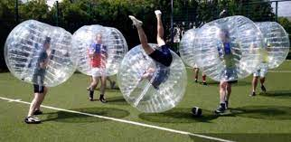

¿Alguna vez has oído hablar del fútbol burbuja o bubble football? Se trata de una variante del fútbol tradicional que gana cada vez más adeptos. ¡Vamos a descubrirlo! ¿QUÉ ES Y CÓMO SE JUEGA? El fútbol burbuja se juega con la parte superior del cuerpo dentro de una burbuja o esfera hinchable de plástico transparente, hecha con cámaras de aire en su interior para amortiguar choques y caídas. Solo las piernas quedan al aire libre para correr y guiar el balón. Se puede practicar tanto al aire libre como en pista cubierta pero, como norma general, los menores de 16 años no juegan en grupo con adultos por seguridad, ya que la diferencia de tamaño provoca que los más pequeños caigan constantemente. REGLAS DEL JUEGO Lo divertido de este deporte es correr, saltar, chocar y rodar cubiertos por la esfera sin riesgos. Incluso se puede tirar al suelo a un contrincante si así se evita el gol. El objetivo es simple: ¡marcar gol! No obstante, hay un árbitro que controla que se cumplan las normas, sin olvidar el respeto al contrario y la para que la experiencia sea divertida para todos.
Recomendaciones:
El fútbol burbuja es de un estilo desenfadado para que todo el mundo tenga cabida en la práctica del fútbol burbuja, dando la posibilidad a aquellos que tengan un mayor interés por competir de realizarlo. De igual modo a aquellos que quieran pasar una buena jornada. A diferencia del fútbol histórico, nacido en unas circunstancias totalmente diferentes, el Bubble Football está destinado a toda esa gente que cada vez tiene una gama más amplia de servicios y actividades originales. Ideal para poder disfrutar de su tiempo libre y nos hemos querido sumar a ese listado siendo los pioneros en España. Si te gustaría jugar al fútbol burbuja, somos la empresa especializada en la organización de eventos de Bubble Football. Contando con la experiencia de una larga trayectoria trabajando en la dinamización de exitosos eventos tan divertidos como seguros.
El Bubble Soccer es un deporte original, desestresante y divertido sin normas que te hará vivir una experiencia intensa como nunca antes. En esta actividad se añade un nuevo elemento, que supone un claro hándicap para poder desarrollar un partido con normalidad, que son las bubble. Son unas “burbujas’’ gigantes de plástico con las que el jugador se cubre el cuerpo desde la cabeza hasta las rodillas. La bubble se sujeta por medio de unos arneses a modo de mochila, por lo que se puede buscar el máximo contacto entre los jugadores. La actividad deportiva del Fútbol Burbuja, es la última alternativa conocida dentro de la gran gama de actividades de ocio. Ideal para team building, actividades originales y divertidas para despedidas de soltero, solteras y mixtas (nuestras despedidas mixtas, son una experiencia conjunta inolvidable), cumpleaños, fiestas infantiles y jornadas lúdico-deportivas. Se pueden realizar para pasarlo en grande con un grupo de amigos de a partir de 8 jugadores y sin límite de participantes.
